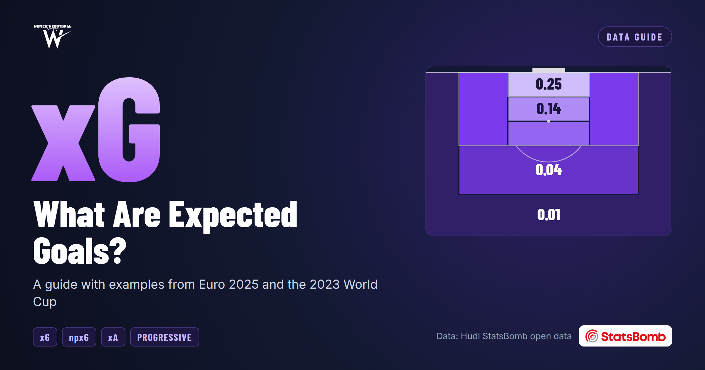
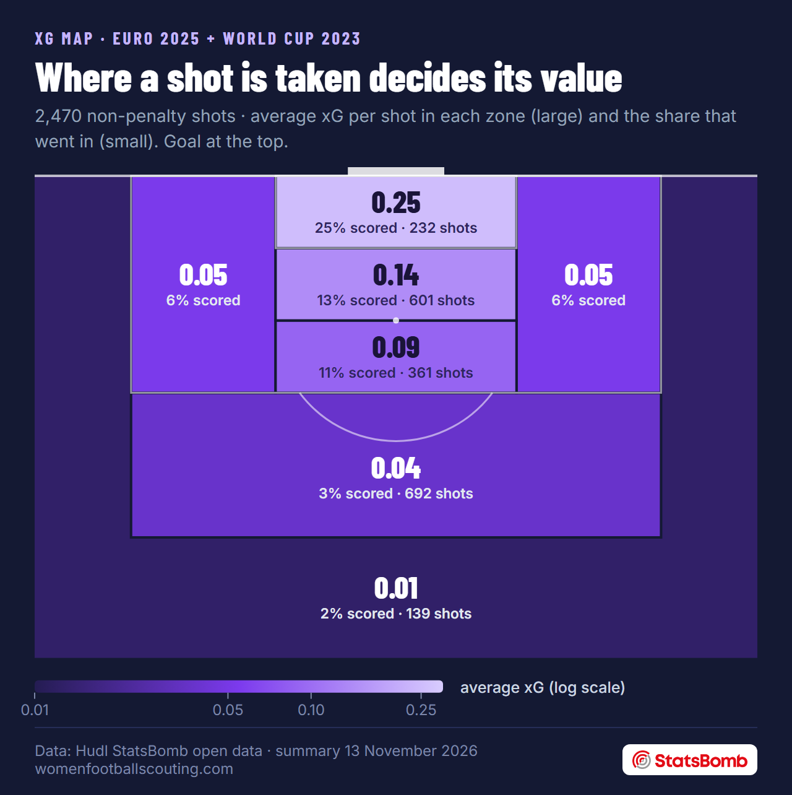

What Is xG? Expected Goals Explained with Euro 2025 and 2023 World Cup Data
How do you measure the chance that a shot goes in, and is a player a good finisher or just lucky? Using 2,511 shots from Women's Euro 2025 and the 2023 World Cup, we explain expected goals (xG), non-penalty xG, expected assists (xA) and progressive actions with real examples.

World Cup 2023 · 64 games
summary 13 November 2026
In football the scoreboard usually tells you only the outcome. A team can miss three big chances and win with one long-range strike; a striker can end a tournament without a goal and still have been in all the right places. Expected goals (xG) is the best-known way of telling those things apart.
Our examples come from Hudl StatsBomb's public event data: the 31 games of Euro 2025 and the 64 games of the 2023 World Cup. We start with what xG is, then move on to non-penalty xG, expected assists and progressive actions, all with real examples.
01xG: the chance that a shot goes in
Expected goals (xG) gives every shot a value between 0 and 1. The value says how often comparable shots have been scored: a 0.25 xG shot means that one in four shots taken from the same place in the same way ends up in the net. xG measures the quality of the chance, not the quality of the person shooting.
StatsBomb's model looks at the location and angle of the shot, the body part used, the type of pass that set it up, and information such as where the goalkeeper and defenders were at the moment of the shot. A player's or a team's xG is simply the sum of the values of their shots.

The map makes the rule plain. Shots from inside the six-yard box are worth 0.25 xG on average, and 25% of them were scored. Around the penalty spot the average drops to 0.14 xG. Step outside the box, even straight in front of goal, and it is 0.04 xG: across the two tournaments 34% of non-penalty shots came from outside the box, but they produced only 12% of the goals.
A penalty is valued at a fixed figure: 0.78 xG on average. In normal and extra time across the two tournaments 41 penalties were taken and 28 were scored. The 488 headed shots (penalties aside) averaged 0.11 xG, and 10% of them went in.
In every zone the average xG and the actual scoring rate are close: the model does its job. But for a single shot, xG is a probability, not an outcome.
02npxG: keeping penalties apart
A penalty is the result of a rule rather than a chance created in open play, and on its own it adds 0.78 xG. The total of whoever takes the penalties is easily inflated, so when comparing players we use non-penalty xG (npxG) and remove penalty goals from the goal count.
Two examples from Euro 2025: Ada Hegerberg's total xG is 3.57, her npxG 2.01. The difference comes from two penalties. Both went off target: one against Switzerland (group game), the other against Italy (quarter-final). Both of Hegerberg's goals came from open play or set pieces. Alexia Putellas has 2.52 xG and 1.74 npxG: her only penalty, in the quarter-final against Switzerland, was saved.
03Euro 2025: who beat expectations and who fell short
The highest npxG at the tournament belongs to Esther Gonzalez: 4.02 npxG from 24 shots and 4 goals. Expectation and outcome are almost identical, and her 4 goals also made her the tournament's top scorer. Stina Blackstenius turned 2.98 npxG into 3 goals.
![The 12 players with the highest npxG at Euro 2025: Esther Gonzalez (Spain): npxG 4.02, non-penalty goals 4; Stina Blackstenius (Sweden): npxG 2.98, non-penalty goals 3; Alessia Russo (England): npxG 2.41, non-penalty goals 2; Ella Toone (England): npxG 2.32, non-penalty goals 2; Cristiana Girelli (Italy): npxG 2.24, non-penalty goals 3; Marie-Antoinette Katoto (France): npxG 2.13, non-penalty goals 2; Ada Hegerberg (Norway): npxG 2.01, non-penalty goals 2; Alexia Putellas (Spain): npxG 1.74, non-penalty goals 3; Lea Schüller (Germany): npxG 1.70, non-penalty goals 2; Lauren Hemp (England): npxG 1.55, non-penalty goals 1; Klara Bühl (Germany): npxG 1.39, non-penalty goals 0; Lauren James (England): npxG 1.36, non-penalty goals 2.](euro-2025-gol-xg.png)
Cristiana Girelli scored 3 non-penalty goals from 2.24 npxG, Alexia Putellas 3 from 1.74. At the other end is Klara Bühl: 24 shots and 1.39 npxG, but no goals.
Outside the chart there are even more striking cases. Signe Gaupset scored 2 goals from 8 shots worth 0.39 npxG in total, Victoria Pelova 2 from 5 shots worth 0.41. With so few shots, a gap of one or two goals may say more about luck (variance, in statistical terms) than about finishing.
At a tournament a player gets six or seven games at most. Before reading the gap between goals and xG as "finishing skill", look at the number of shots.
042023 World Cup: 5 goals, 1.87 npxG
Hinata Miyazawa finished the tournament as top scorer with 5 goals, yet her 13 shots were worth 1.87 npxG in total: 3.13 goals above expectation. Alba Redondo, who reached the highest npxG of the tournament, turned 4.58 npxG into 3 goals.
![The 12 players with the highest npxG at the 2023 World Cup: Alba Redondo (Spain): npxG 4.58, non-penalty goals 3; Jill Roord (Netherlands): npxG 3.16, non-penalty goals 4; Kadidiatou Diani (France): npxG 2.65, non-penalty goals 2; Mary Boio Fowler (Australia): npxG 2.54, non-penalty goals 1; Jennifer Hermoso (Spain): npxG 2.43, non-penalty goals 3; Thembi Kgatlana (South Africa): npxG 2.38, non-penalty goals 2; Lauren Hemp (England): npxG 2.31, non-penalty goals 3; Stina Blackstenius (Sweden): npxG 2.09, non-penalty goals 1; Alessia Russo (England): npxG 1.98, non-penalty goals 3; Alexandra Popp (Germany): npxG 1.93, non-penalty goals 3; Alex Morgan (USA): npxG 1.87, non-penalty goals 0; Hinata Miyazawa (Japan): npxG 1.87, non-penalty goals 5.](dunya-kupasi-2023-gol-xg.png)
Alex Morgan reached 1.87 npxG from 17 shots without scoring; Mary Boio Fowler got 1 goal from 2.54 npxG. Just outside the chart is a centre-back: Amanda Ilestedt scored 4 goals from 9 shots worth 1.84 npxG.
The finals: an xG edge does not guarantee the trophy
Both tournaments ended with Spain against England. In the 2023 final Spain produced 2.19 xG and England 0.47, and the game finished 1-0; Spain's total includes Jennifer Hermoso's missed penalty (0.78 xG). In the Euro 2025 final Spain produced 2.14 xG and England 0.88; it finished 1-1 and England won the shoot-out 3-1.
05xA: the expected value of an assist
An assist depends on two players: the passer creates the chance, the shooter finishes it. Expected assists (xA) separates the two by crediting the passer with the xG of the shot that follows the pass. Even if the team-mate misses, the passer gets credit for the chance created. In this article xA is the total xG of shots that came directly from a player's passes (key passes).

The highest xA at Euro 2025 belongs to Johanna Rytting-Kaneryd: 2.32 xA and 2 assists in 395 minutes. Alexia Putellas turned 1.81 xA into 4 assists; nobody at the tournament made more. Lauren Hemp's passes created chances worth 1.34 xA, but none became an assist: by xA the chances were there, they were just not finished.
06Progressive actions: moving the ball towards goal
Goal and shot metrics look at the last moment of an attack. To see how the ball got there, we use progressive passes and carries. Providers define them differently; we use a simple definition: in open play, a completed pass or carry that starts outside the 40% of the pitch nearest a team's own goal and moves the ball at least 10 yards closer to the centre of the opponent's goal, plus any pass or carry from outside the penalty area into it.
![The 10 players with the most progressive actions per 90 at Euro 2025 (minimum 270 minutes): Mariona Caldentey (Spain): passes 11.2, carries 4.6, total 15.8; Laia Aleixandri (Spain): passes 12.1, carries 2.2, total 14.2; Klara Bühl (Germany): passes 2.7, carries 10.8, total 13.6; María Méndez (Spain): passes 12.3, carries 0.6, total 12.8; Johanna Rytting-Kaneryd (Sweden): passes 4.8, carries 7.5, total 12.3; Selma Bacha (France): passes 7.0, carries 4.9, total 11.9; Claudia Pina (Spain): passes 5.7, carries 5.7, total 11.4; Patri Guijarro (Spain): passes 10.0, carries 1.3, total 11.3; Ona Batlle (Spain): passes 7.8, carries 2.6, total 10.4; Carlotta Wamser (Germany): passes 8.2, carries 2.1, total 10.3.](euro-2025-ilerletici.png)
Mariona Caldentey leads clearly with 15.8 progressive actions per 90. There are 2 centre-backs in the top 10 (Laia Aleixandri, María Méndez): defenders who bring the ball out from the back stand out here and never appear in the goals-and-assists table. Of Klara Bühl's 84 progressive actions, 67 were carries: the same metric shows two very different player types.
07Reading xG
Keep three things in mind when you look at xG. A player gets between three and seven games at a tournament, so a gap of a few shots can come down to luck. xG only measures shots: a dangerous attack whose final pass is cut out does not count at all. And the model is an estimate; different providers' xG values can differ, and here we used StatsBomb's.
There is also the question of dates. The newest women's league seasons in StatsBomb's open data are 2023/24 (last game 16 June 2024), and the newest tournament is Euro 2025 (last game 27 July 2025). This season's event data is not public, so this piece is about concepts, not current form.
Data: Hudl StatsBomb open data (github.com/statsbomb/open-data). This analysis is published for non-commercial, educational purposes with attribution and the StatsBomb logo. No raw data is included in or distributed from this page.
Source: Hudl StatsBomb open data, Euro 2025 (2 July–27 July 2025) and the 2023 World Cup (20 July–20 August 2023); summary of 13 November 2026. Minutes include extra time; penalty shoot-outs and own goals are left out. xA is the total xG of shots that came directly from a player's passes.
More files


✉️ Data newsletter: transfer windows, expiring contracts and league data. At most a few e-mails a month. Sign up →